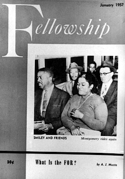
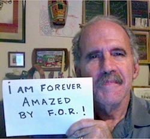

Friends,
We were 99 years old on November 12, 2014.
|

On Dec. 21, 1956, the Montgomery Bus Boycott ended. FOR Field Secretary Rev. Glenn Smiley sat alongside Rev. Martin Luther King, Jr. on the first desegregated Montgomery public bus.
|
Nearly a century ago, 34 women and 34 men attended the first meeting of FOR-USA in Garden City, New York. It was firmly declared that we would be an interfaith organization. Since that beginning, we've been:
- Following the leadership of those 68 women and men.
- Exploring interfaith and multifaith possibilities for peace and justice.
- Lifting up the struggle for racial justice. The first issue of our periodical Fellowship, then called The New World, was published in January 1918 and featured an article called "The War and the Negro" that outlined "the unbridled mistreatment of African Americans in WWI."
- Leading and co-leading important actions of conscience. Throughout its 99-year history, FOR has energized the movement to support conscientious objectors. FOR has nurtured relationships with many other organizations, including the ACLU that continues up to the present day to provide legal work for COs.
- Cultivating alliances that are many and deep. In addition to the ACLU, FOR has worked with the War Resisters League, many labor unions, the NAACP, the Southern Christian Leadership Conference, the Student Nonviolent Coordinating Committee, the American Friends Service Committee, Veterans for Peace, Iraq Veterans Against the War, Sept. 11 Families for Peaceful Tomorrows, and Voices for Creative Nonviolence -- to name only a few.
Make a tax-deductible donation to FOR now and help us build peace and justice for the next 99 years.
I am amazed by FOR's legacy
It has been my pleasure and sheer delight to begin to immerse myself in our remarkable history. It has been a gift, for me, to come on the FOR National Council in 2014 at a time when the "American FOR" (as it was first known) has been preparing to celebrate its centennial.
I have had the good fortune to rediscover in the basement of FOR's headquarters in Nyack, NY, publications with articles by Norman Thomas, Zora Neale Hurston, Mohandas Gandhi, George Hauser, Dr. Martin Luther King, Thich Nhat Hahn, and many, many more.
To understand why I am amazed by this treasure trove of writing, I invite you to read one of these articles, "How It Feels to Be Colored Me," by Zora Neale Hurston.
Your end-of-year donation to FOR ensures that our legacy won't end.
It is no wonder that I'm amazed by FOR
|

Nine of the 16 members of the Journey of Reconciliation sponsored in 1947 by CORE and FOR prepare to test interstate bus segregation laws. Bayard Rustin (center) and George Houser (second from right) were primary organizers of this "first freedom ride."
|
I believe that FOR is doing the work that must be done if our country is to be changed from the oppressor it is domestically and abroad.
What has happened in Ferguson, MO, is not unlike what happened throughout the southeast just 50 years ago, when FOR stood with so many others for the principles of active nonviolence. In Selma -- and, before that, on the buses across the South, and in the restaurants in Chicago, and the list goes on and on, continuing to this day.
FOR's history is a rich tapestry of working with others for the long-haul. Among them were leaders such as Jane Addams and Bayard Rustin. Addams, internationally known for her peace activism, served on the FOR National Council from 1917 to 1933; Rustin, who "officially" worked with FOR a decade, committed himself to life-long service wholly aligned with the statement of principles, now the FOR Statement of Purpose.
FOR's century-long fabric is well-worn, textured, many-colored, tightly knit with its allies, and yet not threadbare.
Kindly join with me to give what you can: Make a donation to FOR today.
If you can't give financial support, consider starting or working with a local chapter of FOR-USA, lifting up this important work in our 99th year. And join me in asking the question of others: "What will we be after the first 100 years?"
Doug Mackey
FOR-USA National Council
Doug is part of a team of international supporters of the Afghan Peace Volunteers encouraging participation in Global Days of Listening and the 2millionfriends.org campaign. He traveled to Afghanistan in September 2011 through the auspices of a clean water delegation sponsored by FOR. Doug lives in Olympia, Washington, with his spouse Jody. |